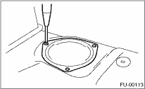
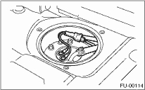
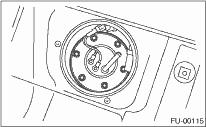
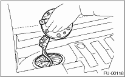

WARNING:
Place “NO OPEN FLAMES” signs near the working area.
CAUTION:
Be careful not to spill fuel.
1. Set the vehicle on a lift.
2. Disconnect the ground cable from the battery.

3. Lift up the vehicle.
4. Drain the fuel tank. 
5. Remove the luggage floor mat.
6. Remove the service hole cover.

7. Disconnect the connector from the fuel sub level sensor.
8. Disconnect the fuel jet pump hose.

9. Remove the bolts which install fuel sub level sensor on fuel tank.

10. Remove the fuel sub level sensor.
